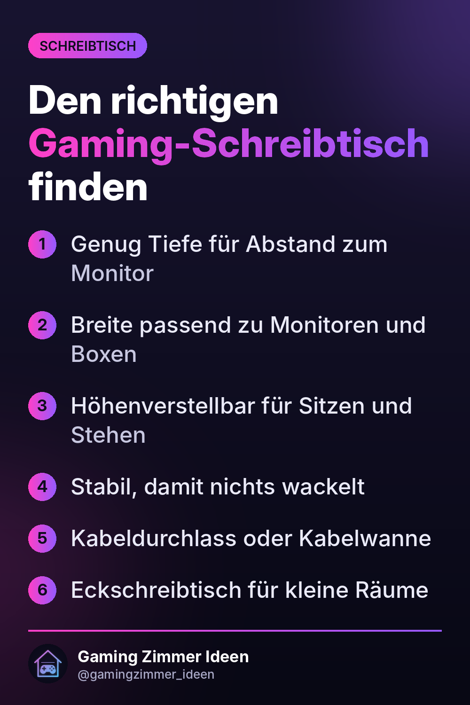
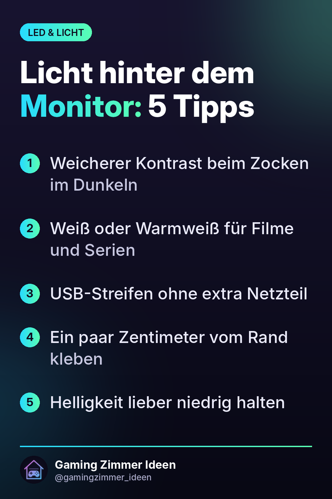
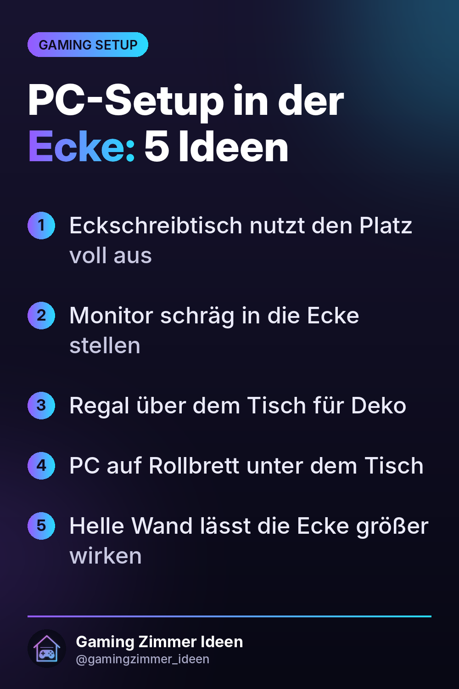
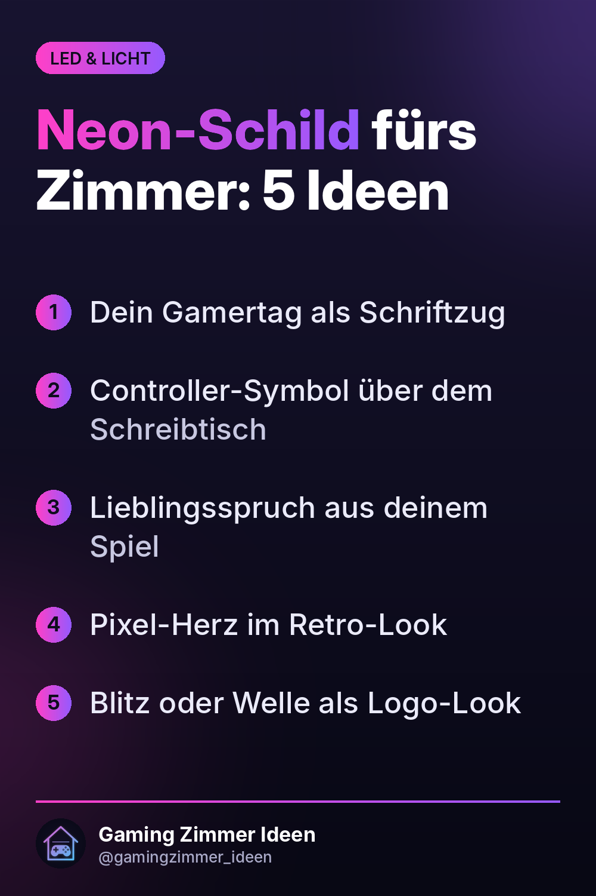
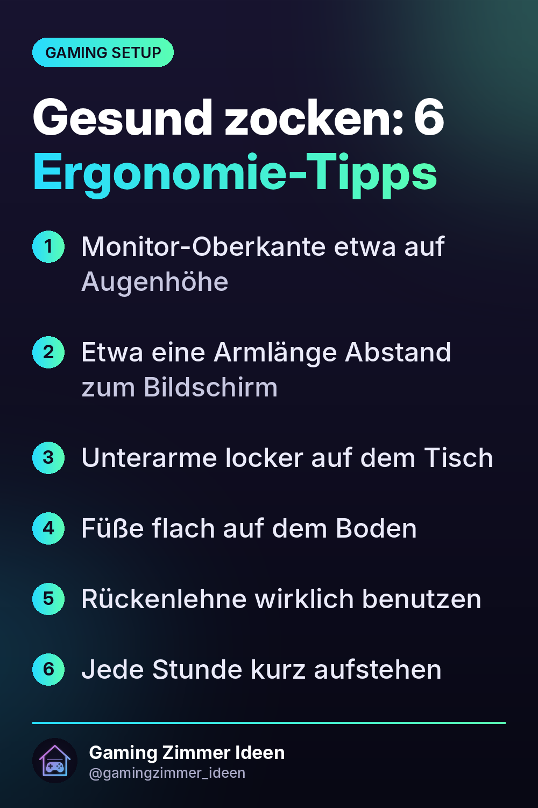
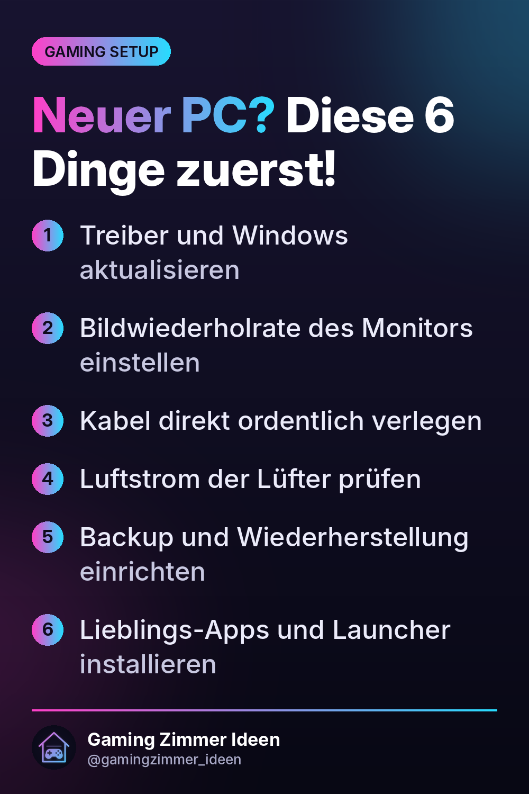

Mo 07.12. 12:00 · Gaming Zimmer Deko
Zockerzimmer im Winter gemütlich machen: Warmweißes Licht, eine Kuscheldecke über dem Gaming-Stuhl, ein Teppich gegen kalte Füße, eine Lichterkette am Fenster, ein Becherhalter für Tee oder Kakao und eine Couch-Ecke für Koop-Abende mit Freunden. Perfekt für lange Winterabende. Jetzt merken!
Mo 07.12. 20:00 · Gaming Setup Ideen
Gaming Setup günstig einrichten: Zuerst in Stuhl und Monitor investieren, gebraucht kaufen, LED-Streifen statt teurer Lampen nutzen, Kabel kostenlos ordnen, Poster statt teurer Wandbilder aufhängen und Schritt für Schritt aufrüsten. So bekommst du ein tolles Setup, ohne dein Konto zu sprengen. Jetzt merken!

Di 08.12. 12:00 · Schreibtisch Organisation
Gaming Schreibtisch kaufen – darauf solltest du achten: genug Tiefe für Abstand zum Monitor, passende Breite für Bildschirme und Boxen, Höhenverstellung, Stabilität, ein Kabeldurchlass oder eine Kabelwanne und ein Eckschreibtisch für kleine Räume. Mit dieser Checkliste findest du den passenden Tisch. Jetzt merken!
Di 08.12. 20:00 · Gaming Setup Ideen
Couch Gaming Ecke einrichten: Ein kleines Sofa oder zwei Sitzsäcke, ein Beistelltisch für Snacks, ein zweiter Controller immer geladen, indirektes Licht hinter dem Fernseher und Decken griffbereit. So werden Koop-Abende mit Freunden richtig gemütlich. Jetzt merken!

Mi 09.12. 12:00 · LED Beleuchtung Gaming Zimmer
Bias Lighting erklärt: Ein LED-Streifen hinter dem Monitor sorgt für weicheren Kontrast, wenn du abends zockst. Weiß oder Warmweiß passt zu Filmen, ein USB-Streifen braucht kein extra Netzteil, und mit etwas Abstand zum Rand und niedriger Helligkeit wirkt das Licht am schönsten. Jetzt merken!

Mi 09.12. 20:00 · Gaming Setup Ideen
Gaming Setup in der Zimmerecke: Ein Eckschreibtisch nutzt den Platz voll aus, der Monitor steht schräg in der Ecke, ein Regal darüber trägt Deko, der PC steht auf einem Rollbrett unter dem Tisch und eine helle Wand lässt alles größer wirken. Perfekt für kleine Zimmer. Jetzt merken!

Do 10.12. 12:00 · LED Beleuchtung Gaming Zimmer
Neon Schild Ideen fürs Gaming Zimmer: Dein Gamertag als Schriftzug, ein Controller-Symbol über dem Schreibtisch, ein Lieblingsspruch, ein Pixel-Herz im Retro-Look oder ein Blitz als Logo. Ein LED-Neon-Schild macht jede Wand zum Highlight und sieht auch im Stream super aus. Jetzt merken!

Do 10.12. 20:00 · Gaming Setup Ideen
Ergonomie beim Gaming: Die Monitor-Oberkante etwa auf Augenhöhe, rund eine Armlänge Abstand zum Bildschirm, Unterarme locker auf dem Tisch, Füße flach auf dem Boden, die Rückenlehne nutzen und jede Stunde kurz aufstehen. So bleibt dein Rücken auch nach langen Sessions entspannt. Jetzt merken!
Fr 11.12. 12:00 · LED Beleuchtung Gaming Zimmer
Smarte LED Beleuchtung kann mehr als bunt leuchten: Licht-Szenen per App, Steuerung per Sprachbefehl, sanftes Wecklicht, Musik-Sync für Partys, ein Einschlaf-Timer und Licht, das sich dem Bildschirm anpasst. So holst du das Maximum aus deinem Gaming-Zimmer heraus. Jetzt merken!

Fr 11.12. 20:00 · Gaming Setup Ideen
Neuer Gaming PC – was jetzt? Zuerst Treiber und Windows aktualisieren, die Bildwiederholrate des Monitors richtig einstellen, Kabel direkt ordentlich verlegen, den Luftstrom der Lüfter prüfen, ein Backup einrichten und deine Launcher installieren. So startest du ohne Probleme. Jetzt merken!
Sa 12.12. 12:00 · LED Beleuchtung Gaming Zimmer
Grelles Deckenlicht zerstört jede Atmosphäre. Besser: eine Stehlampe mit Farbwechsel, eine LED-Leiste entlang der Decke, Wandlichter neben dem Bett, eine Lichterkette am Regal und eine Schreibtischlampe zum Arbeiten. So wird dein Zimmer abends gemütlich und trotzdem hell genug. Jetzt merken!
Sa 12.12. 20:00 · Gaming Setup Ideen
Clean Gaming Setup: Nur das Nötigste auf dem Tisch, kabellose Maus und Tastatur, wenige Farben, ein Monitorarm für freie Fläche, komplett unsichtbare Kabel und ein einziges Deko-Highlight. Weniger ist mehr – so sieht dein Setup ruhig, modern und aufgeräumt aus. Jetzt merken!
So 13.12. 12:00 · LED Beleuchtung Gaming Zimmer
Beleuchtung für Zimmer mit Dachschräge: LED-Streifen entlang der Schräge, eine Lichtleiste am Kniestock, Spots in den Dachbalken, eine Lichterkette ums Dachfenster und indirektes Licht hinter dem Bett. So wird dein Dachzimmer zum gemütlichen Gaming-Zimmer. Jetzt merken!
So 13.12. 20:00 · Gaming Setup Ideen
White Gaming Setup Ideen: Ein weißer Tisch als Basis, Maus, Tastatur und Headset in Weiß, Holz und Pflanzen als Kontrast, warmes Licht, weiße oder versteckte Kabel und Lila oder Pink als Akzentfarbe. So wirkt dein Setup hell, modern und richtig stimmig. Jetzt merken!